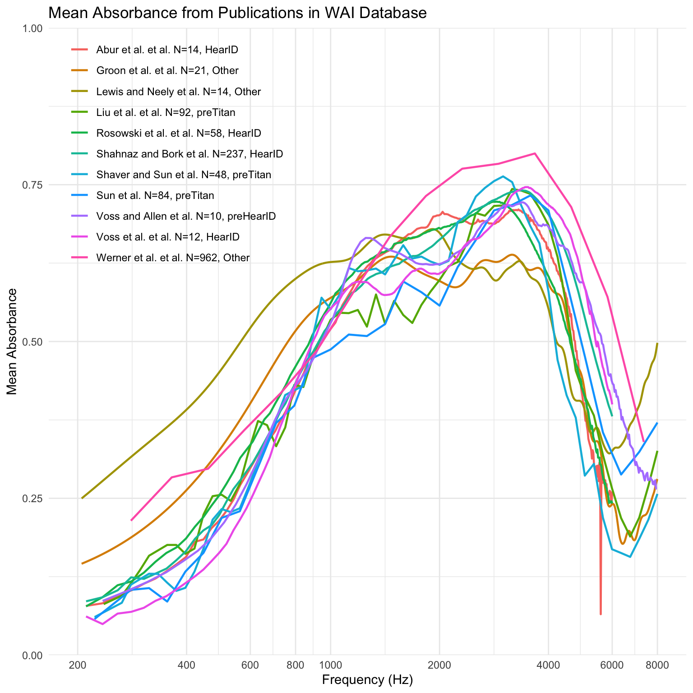
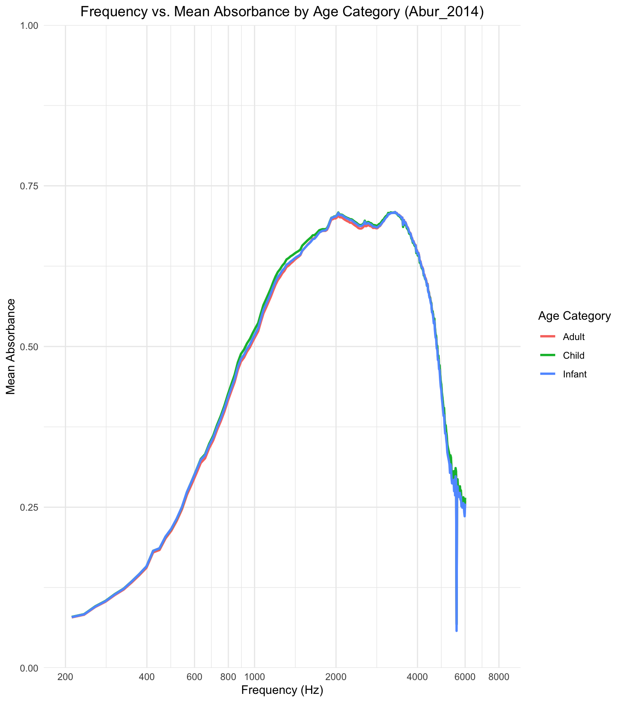

SHOW TABLES;| Tables_in_wai |
|---|
| Codebook |
| Measurements |
| Measurements_pre2020 |
| PI_Info |
| PI_Info_OLD |
| Subjects |
| Subjects_pre2020 |
There are two main goals of this project. First, to recreate Figure 1 from Voss (2020) using SQL to query the Wideband Acoustic Immittance (WAI) Database. This requires calculating mean absorbance values for 12 selected studies and producing a correctly labeled plot in R. Second, to explore a study in the database where subjects of varying age categories, were enrolled. For this study, I will analyze frequency vs. mean absorption by age category and create an informative plot to visualize the data.
The SQL queries handle data filtering, aggregation, and JOIN operations to generate datasets ready for visualization in R. The analysis aims to demonstrate proficiency in both SQL for data wrangling and R for plotting.
This project uses data from the Wideband Acoustic Immittance (WAI) Database hosted by Smith College, which provides WAI ear measurements published in peer-reviewed articles. The data was accessed via SQL queries for analysis.
The analysis reproduces Figure 1 from the article:
Voss, Susan E. Ph.D. (2019). Resource Review. Ear and Hearing, 40(6), p. 1481, November/December 2019.
DOI: 10.1097/AUD.0000000000000790
Addtionally, I will provide the sources for both the Abur 2014 and Hunter 2016 as I looked more in depth into their datasets:
Abur, D., Horton, N. J., & Voss, S. E. (2014). Wideband acoustic immittance measures in normal-hearing adults: Test-retest reliability and effects of ear-canal pressurization. Hearing Research, 316, 23–31. DOI Link
Hunter, L. L., Monson, B. B., Prieve, B. A., & Fitzgerald, T. S. (2016). NICU graduates and wideband absorbance: A comparison of normative data. Hearing Research, 342, 72–80. DOI Link
Establish connection to the database and also create variables for needed tables for ease of use.
A look at all tables in the data set
SHOW TABLES;| Tables_in_wai |
|---|
| Codebook |
| Measurements |
| Measurements_pre2020 |
| PI_Info |
| PI_Info_OLD |
| Subjects |
| Subjects_pre2020 |
View the Measurements variables
DESCRIBE Measurements;| Field | Type | Null | Key | Default | Extra |
|---|---|---|---|---|---|
| Identifier | varchar(50) | NO | PRI | NA | |
| SubjectNumber | int | NO | PRI | NA | |
| Session | int | NO | PRI | NA | |
| Ear | varchar(50) | NO | PRI | ||
| Instrument | varchar(50) | NO | PRI | ||
| Age | float | YES | NA | ||
| AgeCategory | varchar(50) | YES | NA | ||
| EarStatus | varchar(50) | YES | NA | ||
| TPP | float | YES | NA | ||
| AreaCanal | float | YES | NA |
View the PI_Info variables
DESCRIBE PI_Info;| Field | Type | Null | Key | Default | Extra |
|---|---|---|---|---|---|
| Identifier | varchar(50) | NO | PRI | NA | |
| Year | int | NO | NA | ||
| Authors | text | NO | NA | ||
| AuthorsShortList | text | NO | NA | ||
| Title | text | NO | NA | ||
| Journal | text | NO | NA | ||
| URL | text | NO | NA | ||
| Abstract | text | NO | NA | ||
| DataSubmitterName | text | NO | NA | ||
| DataSubmitterEmail | text | NO | NA |
Selecting and viewing relevant columns within a study
SELECT
Identifier,
Frequency,
Absorbance
FROM Measurements
Where Identifier = "Abur_2014"
LIMIT 0, 5;| Identifier | Frequency | Absorbance |
|---|---|---|
| Abur_2014 | 210.938 | 0.0333379 |
| Abur_2014 | 234.375 | 0.0315705 |
| Abur_2014 | 257.812 | 0.0405751 |
| Abur_2014 | 281.250 | 0.0438399 |
| Abur_2014 | 304.688 | 0.0486400 |
Used the following queary to create an output variable called “data” to be used as the main data source for our plot in R.
SELECT
Measurements.Identifier,
PI_Info.AuthorsShortList,
Measurements.Instrument,
Measurements.Frequency,
AVG(Measurements.Absorbance) AS MeanAbsorbance,
CONCAT(PI_Info.AuthorsShortList, ' et al. N=',
COUNT(DISTINCT CONCAT(Measurements.SubjectNumber, Measurements.Ear)), ', ', Measurements.Instrument) AS Legend_Label
FROM Measurements
JOIN PI_Info ON Measurements.Identifier = PI_Info.Identifier
WHERE Measurements.Identifier IN ('Abur_2014', 'Feeney_207', 'Groon_2015', 'Lewis_2015', 'Liu_2008', 'Rosowski_2012', 'Shahnaz_2006', 'Shaver_2013', 'Sun_2016', 'Voss_1994', 'Voss_2010', 'Werner_2010')
AND Measurements.Frequency >= 200 -- Apply frequency filter in SQL
GROUP BY Measurements.Identifier, Measurements.Instrument, PI_Info.AuthorsShortList, Measurements.Frequency;The resulting dataset was visualized in R to replicate the mean absorbance plot from Voss (2020):
ggplot(data, aes(x = Frequency, y = MeanAbsorbance, color = Legend_Label)) +
geom_line(size = 0.8) +
labs(
title = "Mean Absorbance from Publications in WAI Database",
x = "Frequency (Hz)",
y = "Mean Absorbance"
) +
theme_minimal() +
scale_x_continuous(
trans = "log10",
breaks = c(200, 400, 600, 800, 1000, 2000, 4000, 6000, 8000),
labels = c("200", "400", "600", "800", "1000", "2000", "4000", "6000", "8000"),
limits = c(200, 8000)
) +
scale_y_continuous(
limits = c(0, 1),
expand = c(0, 0)
) +
theme(
legend.position = c(0.2, 0.8), # Place legend inside the plot
legend.title = element_blank() # Remove legend title
)
Description:
This plot shows mean absorbance values across frequencies for the 12 studies in the WAI database. Each line represents a study, with a legend indicating the authors, the number of unique ears included, and the instrument used.
Shows the age categories
SELECT DISTINCT AgeCategoryFirstMeasurement
FROM Subjects;| AgeCategoryFirstMeasurement |
|---|
| Adult |
| Infant |
| Child |
| NICU |
I began by analyzing the Abur_2014 study for differences in absorbance by age category. I used the follwoing queary to create an output variable for this study called “age_data_Abur_2014”
SELECT
Subjects.AgeCategoryFirstMeasurement AS AgeCategory,
Measurements.Frequency,
AVG(Measurements.Absorbance) AS MeanAbsorbance
FROM Measurements
JOIN Subjects ON Measurements.SubjectNumber = Subjects.SubjectNumber
WHERE Measurements.Identifier = 'Abur_2014'
AND Measurements.Frequency >= 200
GROUP BY Subjects.AgeCategoryFirstMeasurement, Measurements.Frequency;Respective graph for Abur_2014 age data.
ggplot(age_data_Abur_2014, aes(x = Frequency, y = MeanAbsorbance, color = AgeCategory)) +
geom_line(size = 1) +
labs(
title = "Frequency vs. Mean Absorbance by Age Category (Abur_2014)",
x = "Frequency (Hz)",
y = "Mean Absorbance",
color = "Age Category"
) +
theme_minimal() +
scale_x_continuous(
trans = "log10",
breaks = c(200, 400, 600, 800, 1000, 2000, 4000, 6000, 8000),
labels = c("200", "400", "600", "800", "1000", "2000", "4000", "6000", "8000"),
limits = c(200, 8000)
) +
scale_y_continuous(
limits = c(0, 1),
expand = c(0, 0)
) +
theme(
legend.position = "right",
plot.title = element_text(hjust = 0.5)
)
Description:
This plot illustrates how mean absorbance varies across frequencies for different age categories in the Abur_2014 study. In this study all age groups were found to have nearly identical absorbance across frequencies.
I found it very odd that the values for each age group are nearly identical. After talking with my professor we thought that perhabs this could have been due to a sample size issue. To check this I performed the following sql query:
SELECT
Subjects.AgeCategoryFirstMeasurement AS AgeCategory,
COUNT(DISTINCT Measurements.SubjectNumber) AS SampleSize
FROM Measurements
JOIN Subjects ON Measurements.SubjectNumber = Subjects.SubjectNumber
WHERE Measurements.Identifier = 'Abur_2014'
GROUP BY Subjects.AgeCategoryFirstMeasurement;| AgeCategory | SampleSize |
|---|---|
| Adult | 7 |
| Child | 7 |
| Infant | 7 |
Here we can see that there were only 7 observations in each age group category. Such a limited sample size may have restricted the ability to observe meaningful differences between age groupls.
Check which study included NICU in order to visuilze all age group catagories and view an additional study.
SELECT *
FROM Subjects
WHERE AgeCategoryFirstMeasurement = 'NICU'
LIMIT 100;| Identifier | SubjectNumber | SessionTotal | AgeFirstMeasurement | AgeCategoryFirstMeasurement | Sex | Race | Ethnicity | LeftEarStatusFirstMeasurement | RightEarStatusFirstMeasurement | SubjectNotes |
|---|---|---|---|---|---|---|---|---|---|---|
| Hunter_2016 | 1005 | 1 | 1.0750000 | NICU | Male | Caucasian | NonHispanic | Normal | Normal | none |
| Hunter_2016 | 1026 | 5 | 0.0000000 | NICU | Female | Caucasian | NonHispanic | Normal | Normal | none |
| Hunter_2016 | 1035 | 4 | 0.1916670 | NICU | Male | Caucasian | NonHispanic | Normal | Normal | none |
| Hunter_2016 | 1046 | 2 | 0.1500000 | NICU | Female | Caucasian | NonHispanic | Normal | Normal | none |
| Hunter_2016 | 2001 | 1 | 0.9666670 | NICU | Male | Caucasian | NonHispanic | Normal | Normal | none |
| Hunter_2016 | 2006 | 2 | 0.8083330 | NICU | Male | Caucasian | NonHispanic | Normal | Normal | none |
| Hunter_2016 | 2008 | 1 | 0.8500000 | NICU | Female | Caucasian | NonHispanic | Normal | Normal | none |
| Hunter_2016 | 2014 | 2 | 0.6500000 | NICU | Female | Black | NonHispanic | Normal | Normal | none |
| Hunter_2016 | 2030 | 2 | 0.1666670 | NICU | Female | Caucasian | NonHispanic | Normal | Normal | none |
| Hunter_2016 | 2031 | 2 | 0.0166667 | NICU | Female | Caucasian | NonHispanic | Normal | Normal | none |
Next, I explored the Hunter_2016 study, which includes NICU participants:
SELECT
Subjects.AgeCategoryFirstMeasurement AS AgeCategory,
Measurements.Frequency,
AVG(Measurements.Absorbance) AS MeanAbsorbance
FROM Measurements
JOIN Subjects ON Measurements.SubjectNumber = Subjects.SubjectNumber
WHERE Measurements.Identifier = 'Hunter_2016'
AND Measurements.Frequency >= 200 -- Apply frequency filter in SQL
GROUP BY Subjects.AgeCategoryFirstMeasurement, Measurements.Frequency;Respective graph for Hunter_2016 age data.
ggplot(age_data_Hunter_2016, aes(x = Frequency, y = MeanAbsorbance, color = AgeCategory)) +
geom_line(size = 1) +
labs(
title = "Frequency vs. Mean Absorbance by Age Category (Hunter_2016)",
x = "Frequency (Hz)",
y = "Mean Absorbance",
color = "Age Category"
) +
theme_minimal() +
scale_x_continuous(
trans = "log10",
breaks = c(200, 400, 600, 800, 1000, 2000, 4000, 6000, 8000),
labels = c("200", "400", "600", "800", "1000", "2000", "4000", "6000", "8000"),
limits = c(200, 8000)
) +
scale_y_continuous(
limits = c(0, 1),
expand = c(0, 0)
) +
theme(
legend.position = "right",
plot.title = element_text(hjust = 0.5)
)
Description:
This plot highlights the variation in absorbance across frequencies for the Hunter_2016 study. The NICU age group is included, and their absorbance patterns are compared with other age categories. In this study it was found that adults had significantly less absorbance im comparison to younger age groups.
This analysis successfully replicated Figure 1 from Voss (2020) by querying the WAI database and visualizing mean absorbance trends across studies. It also explored absorbance differences by age category for two studies, providing insight into how absorbance varies for different populations, including NICU. The project demonstrates the power of SQL for efficient data wrangling and R for effective visualization.